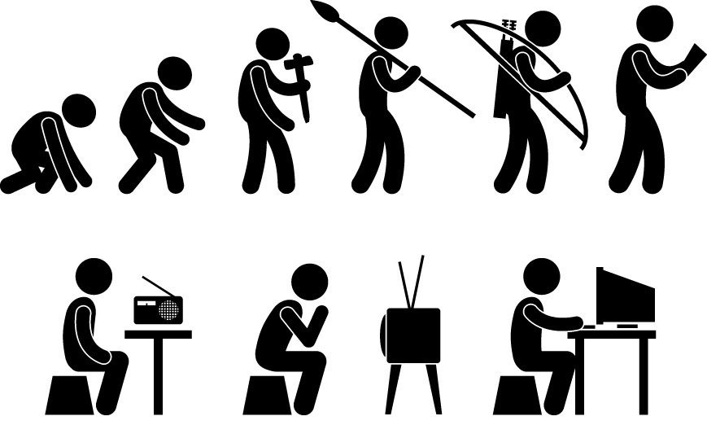
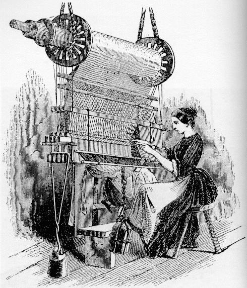
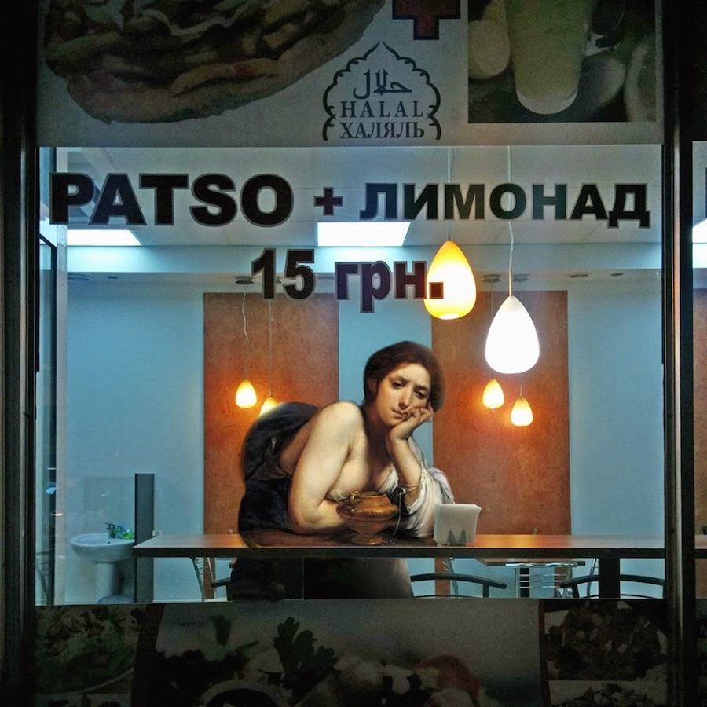
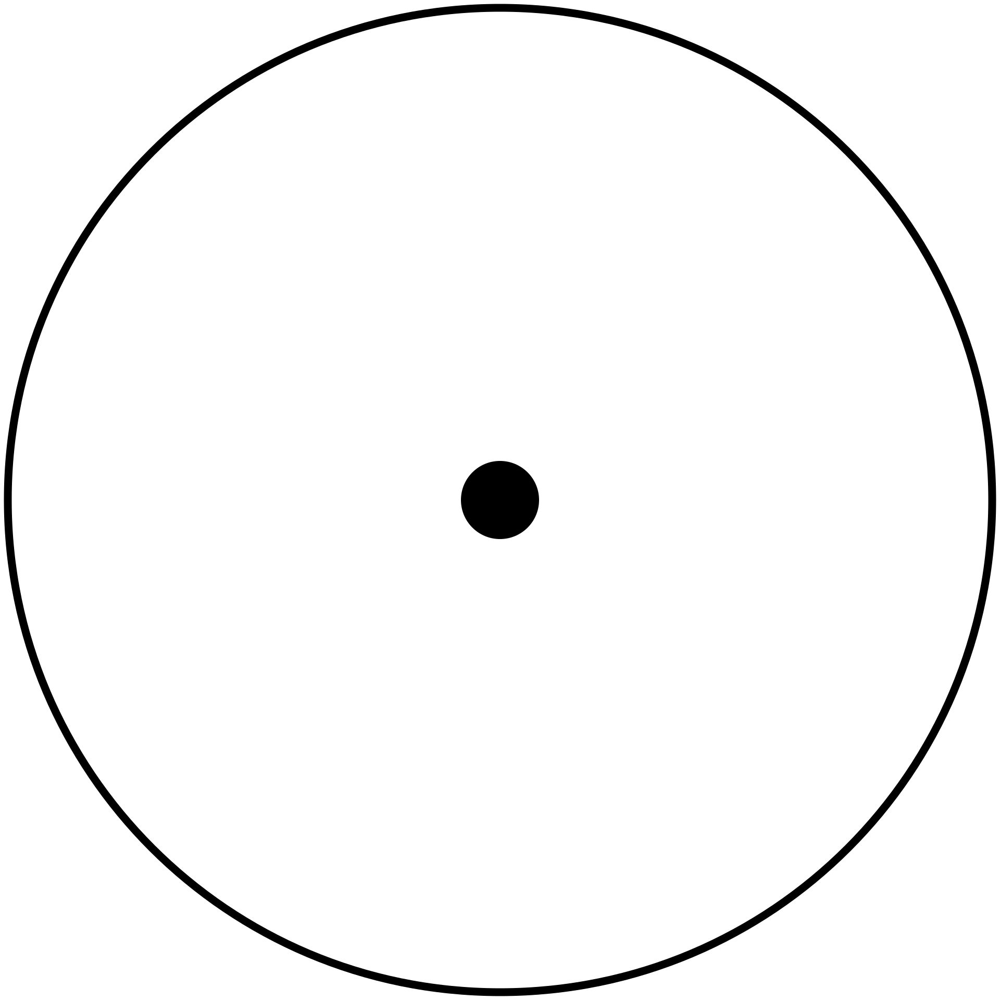
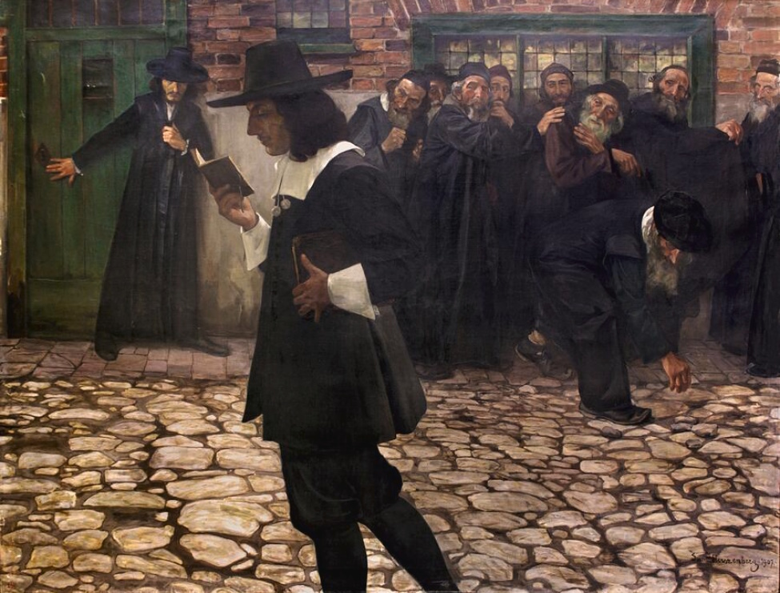
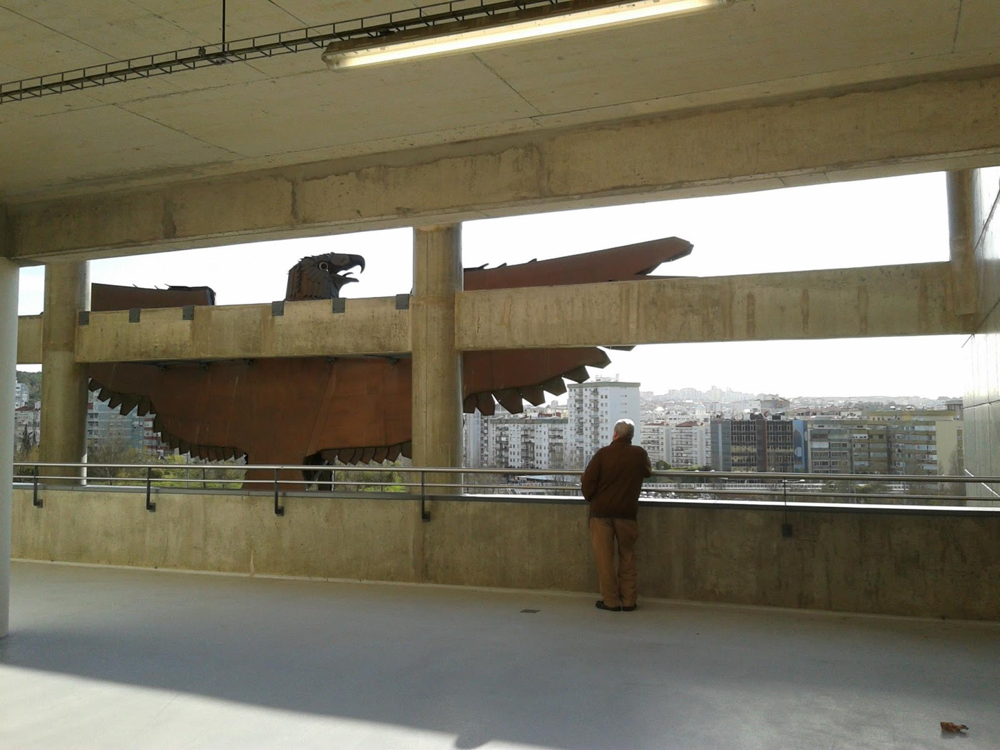

Notes From The Underground - V
Modernity cannot be identified with any particular technological or social breakthrough. Rather, it is a subjective condition, a feeling or an intuition that we are in some profound sense different from the people who lived before us.
[Adam Kirsch (2016)]

The quantum protectorate describes a stable state of matter whose generic properties are determined by a higher organising principle and nothing else. The very large number of atoms present in real bits of matter lead to fundamentally new types of behaviour which are not just simply the properties of an individual atom multiplied by the number of atoms. Different behaviour occurs when you have more.

Make two marks on your mirror on a level with your eyes, and think of them as two human eyes looking into yours.
Do not move your head, but stand erect. Concentrate all your thoughts on keeping your head perfectly still.
Do not let another thought come into your mind. Then, still keeping the head, eyes and body still, think that you look like a reliable man or woman should; like a person that anyone would have confidence in.
While standing before the mirror practice deep breathing.
The one that stands up like a man and has control over the muscles of his face and eyes always commands attention.
Also, sit in a comfortable chair and see how still you can keep.
This is not as easy as it seems.
You will have to center your attention on sitting still.
Watch and see that you are not making any involuntary muscular movements.
By a little practice you will find you are able to sit still without a movement of the muscles for fifteen minutes.
At first I advise sitting in a relaxed position for five minutes.
After you are able to keep perfectly still, increase the time to ten minutes and then to fifteen.
This is as long as it is necessary.
But never strain yourself to keep still.
You must be relaxed completely.
The Art of Manliness (2012)
Alexey Kondakov takes figures from classical paintings and drops them into modern-day Kiev.

I regard the whole Northwestern United States to be among the global hubs of our present derangements. This week it emerged that Seattle 's school board has decided even maths must be subjected to the same numbing and unthinking orthodoxy of our time. In particular that mathematics must – like everything else – be seen through the prism of racism and oppression. Thus as the Seattle Public Schools guidelines for maths education show, students in Seattle schools will be invited to consider questions such as "Where does Power and Oppression show up in our math experience?" or "How has math been used to resist and liberate people and communities of color from oppression?" The cleverer students will realise that there is a "correct" answer to the questions, whether or not those answers are true – as there is to every other question of our age. They'll work out that the answer to every question posed by the Seattle authorities will always and everywhere be the same: "more diversity". But the problem is not with the smarter students, who like most smart people will always find a way to navigate around the lies and dogmas of their age, but the less intelligent applicants. A rather basic knowledge of maths would help such people and come in very handy in their lives: in ordering their finances, and working out their day-to-day interactions with others. If they do not pick up these basics at school, then it is highly unlikely that they will pick them up at some later stage, the education system offering the best chance anyone ever has to surpass their forebears. How disturbing it is to learn that instead, even in a discipline like maths, students will be cocooned and imprisoned in the lies of their age rather than being given the chance to escape them. Douglas Murray (2019)
One only believes in a divinity through what he has made within his own soul - Ibn 'Arabi (13th century)
 
God is an intelligible sphere, whose center is everywhere and whose circumference is nowhere. - Alain de Lille (12th century)
And the people stood afar off, and Moses drew near unto the thick darkness where God was. - Exodus 20:21
Apophaticism, also known as negative theology or the via negativa, is a theological and mystical approach that seeks to understand God by emphasizing what cannot be said about the divine.
Rather than defining God through positive attributes, such as "God is love" or "God is good", apophaticism focuses on negations: stating what God is not.
This method acknowledges the infinite transcendence of God, asserting that human language, reason, and concepts are fundamentally inadequate to capture the fullness of the divine essence.
Epicureanism is a school of philosophy founded in 307 BCE and based upon the teachings of Epicurus, an ancient Greek philosopher.
Epicurus was an atomist and materialist, following in the steps of Democritus.
His materialism led him to religious scepticism and a general attack on superstition and divine intervention.
It is a form of hedonism insofar as it declares pleasure to be its sole intrinsic goal.
Epicureanism is not about indulgence, but about rational self-management of desires and fears to achieve lasting peace.
Pain is understood in two forms: physical (bodily discomfort) and mental (distress, fear, regret).
The ultimate goal is aponia (absence of physical pain) and ataraxia (absence of mental disturbance).
Epicurus distinguished between desires: natural and necessary (e.g., food, shelter), natural but non-necessary (e.g., sexual pleasure, luxury food), and vain (e.g., fame, wealth).
He advised satisfying the first, cautiously enjoying the second, and eliminating the third—because unfulfilled desires create anxiety.
The Girl with the Dragon Tattoo, Rooney Mara and Daniel Craig, 2011
[A Reforma da Primeira Liga]

O campeonato português de futebol tem um problema: o país está falido, sem pessoas, sem recursos e sem perspectivas que algo mude nas próximas décadas.
Assim sendo, a única alternativa é adaptar a primeira liga de futebol ao país existente, tentando extrair o máximo possível do mesmo, sem esquecer que os clubes ainda participam na Taça da Liga e na Taça de Portugal.
Vamos comparar o músculo populacional da liga portuguesa com outras ligas europeias.
Em França existem 20 clubes para 66 milhões de habitantes (3.3 milhões / clube), em Espanha existem 20 clubes para 46 milhões de habitantes (2.3 milhões / clube), na Alemanha existem 18 clubes para 81 milhões de habitantes (4.5 milhões / clube) e, finalmente, em Itália existem 20 clubes para 60 milhões de habitantes (3 milhões / clube).
Em Portugal existem 18 clubes para 11 milhões de habitantes (620 mil / clube).
Actualmente participam 18 clubes que fazem no total 34 jogos por época.
Na época 2016/17 os estádios receberam 3.622.372 de adeptos, o que dá uma média superior a 11.800 por encontro.
Contudo, a média é inflacionada pelos números dos três ditos grandes do futebol português: apenas o V. Guimarães consegue juntar-se-lhes com um registo de assistências acima da média (18.756 por jogo).
Os 51 jogos na Luz, Dragão e Alvalade atraíram 2.309.507 espectadores (média de 45.284), enquanto nos 255 jogos disputados nos restantes estádios estiveram 1.312.865 de pessoas nas bancadas, à média de 5148 por encontro.
Só existe uma opção possível: reduzir o número de clubes na primeira liga para 12 e acabar com a Taça da Liga.
Todos os anos desciam os últimos 2. Assim, Portugal ficaria com um rácio de 920 mil habitantes por clube (um número ainda bastante baixo quando comparado com a Alemanha).
A primeira liga teria 40 jogos pois seria disputada a 4 voltas.
Tudo ficaria melhor: os melhores clubes jogariam mais entre eles, o número de jogos com interesse seriam a maioria, duplicava-se o número de derbies, mais audiências das transmissões televisivas, etc.
No final, mais receita para os clubes, melhores jogadores, mais respeitabilidade da liga portuguesa, melhores hipóteses de competir na Europa. Devemos promover o que é bom e não afogar todos num oceano de mediocridade.